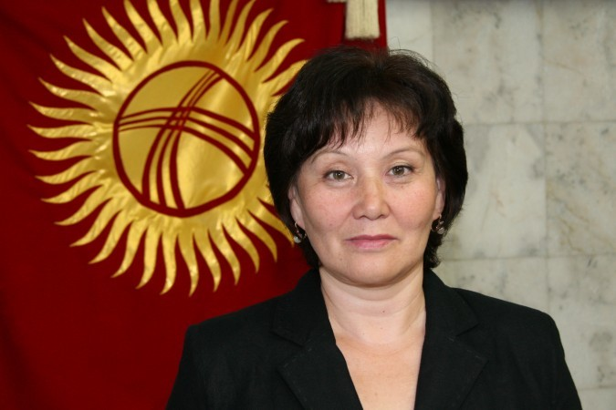

Гульнара Джурабаева
Персональные данные
Дата рождения: 09.02.1959 Национальность: казашка Знание языков: кыргызский, русский
dzhurabaeva@gmail.com

@Гульнара Джурабаева
Образование
- 1976-1981 - высшее образование по специальности "Философия" Казахский государственный университет им. С. Кирова, Алматы
- 1985-1990 - аспирантура на философском факультете Московский Государственный Университет, Москва
- 2003-2006 - второе высшее образование по специальности "Финансы и кредит" , Кыргызский государственный университет им. И. Арабаева, Бишкек
Трудовая деятельность
- 1981-1985 - Преподаватель, Чимкентский педагогический институт, Шымкент
- 1990-1996 - Старший преподаватель кафедры культурологии, Кыргызский Государственный университет
- 1996-2003 - Советник секретариата Постоянной комиссии по социальным и гуманитарным вопросам, Секретариат Межпарламентской ассамблеи Евразийского экономического сообщества
- 2003-2008 - Заместитель начальника кредитного управления, специалист кредитного управления, риск-менеджер Коммерческий банк ОАО «Бакай Банк»
- 2008-2011 - Координатор Проекта, Международного центр «Интербилим»
- 2011-2016 - Заместитель председателя Центральный комиссии по выборам и проведению референдумов Кыргызской Республики
- 27.06.2016-20.07.2021 - Член Центральный комиссии по выборам и проведению референдумов Кыргызской Республики

«В 2007 году я пришла в партию "Ата-Мекен", чтобы стать ее представителем в участковой избирательной комиссии. Перебирая в памяти события прошедших лет, я понимаю, как много меня связывает с партией Ата-Мекен. Благодаря Омурбек Текебаеву я более глубоко осознала место и истинное предназначение парламента. То, что являлось для меня чисто теоретическим знанием, получило благодаря чтению его выступлений и разговорам с ним новое более глубокое наполнение. В нас живет дух и энергия "Ата-Мекена". Я иду на выборы с партией "Ата-Мекен"!»